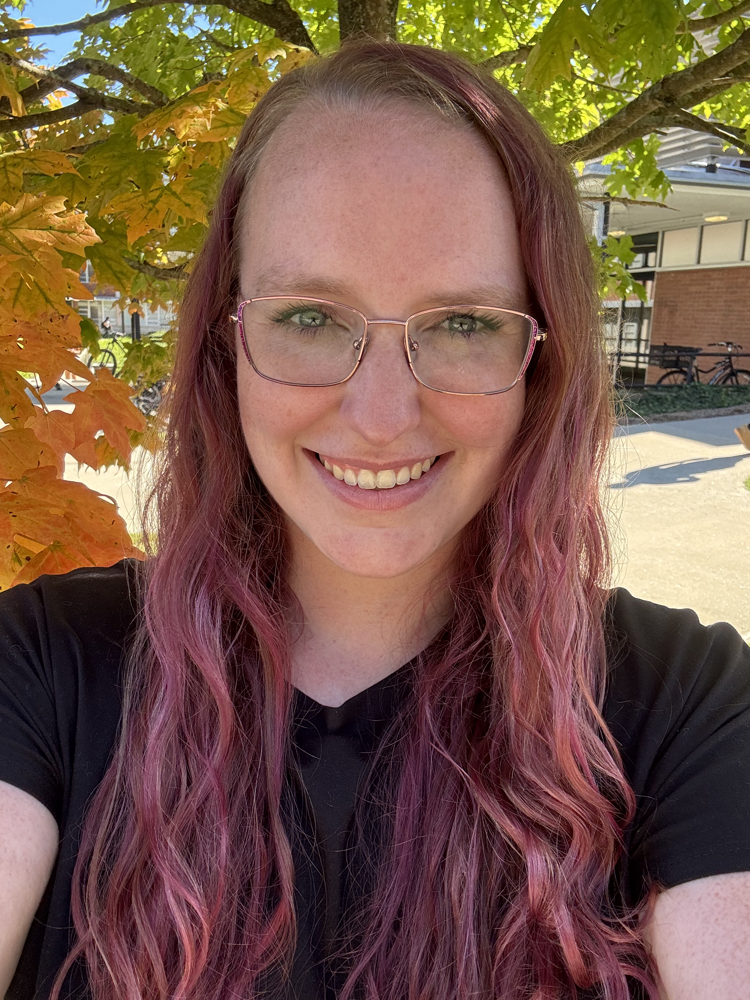

I am in my 5th year as a PhD candidate at the University of Connecticut (UConn), and I intend to graduate in May 2027.
I have wanted to be a mathematics teacher since I was ten years old, and UConn has given me many opportunities to grow my skills as an instructor. I have been primary instructor for multiple courses including Calculus for Business and Economics, Elementary Discrete Mathematics, and Problem Solving. In the 2026-2027 academic year, I am a Mathematics Teaching Innovation Fellow where I teach a small (~50 students) lecture and two discussion sections of Calculus II.
My research interests are in abstract algebra and number theory, specifically algebraic number theory and p-adic analysis. I am advised by Professor Keith Conrad. In Spring 2027, I will defend my thesis titled "Partial Sums of p-adic Logarithms at Torsion Points." I am also interested in the scholarship of teaching and learning.
In June 2026, I participated in the sixth Rethinking Number Theory workshop. My group (Team Cornflower Blue) co-authored the paper The Distribution of k-free Ideals in Ray Class Groups.
Additionally, in the 2025-2026 academic year, I was a TRANSCEND fellow supported by the National Science Foundation Research Traineeship (NRT) grant #2152202. As part of this fellowship, I co-authored a paper titled "Environmental Underreporting in Deaf Education: A Scoping Review and Proposal" that has been accepted to the Journal of Deaf Studies and Deaf Education.